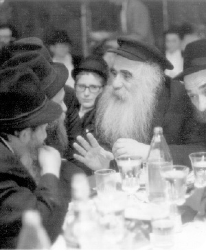

Going to the Rebbe
The Yomim Nora ’ im, as well as the days of joy that follow, Sukkos and Simchas Torah, are particularly propitious for rising above one ’ s personal matters and going to the Rebbe. Each of us must see to it that others go to the Rebbe too . Whoever is able to go, must go; no excuses .

On this day, we plead to our Father in heaven, “reign over the entire world in Your glory,” “and reign, You alone Hashem, over all Your handiwork.” This is why the “mitzva of the day is the shofar,” like when you coronate a king, as described in Tanach and explained at length in Chassidus.
The revelation of Hashem’s kingdom is through the kingship of Moshiach, with the true and complete Geula, as it says throughout the t’fillos of Rosh HaShana. For the Geula is when everything we say in those prayers will be fulfilled, “and You alone will reign over all Your handiwork on Mount Tziyon, the dwelling of Your glory, and in Yerushalayim, the city of Your sanctity,” “and everything that has been made will know that You are its Maker,” etc.
This is why, during these days, we emphasize turning to Moshiach himself. Not just carrying out his orders, consulting with him, and believing in everything he says, but also, and mainly, the essential core of the Rebbe MH”M himself, which is above even those details, as important as they are.
Hiskashrus to Hashem is through hiskashrus to the Rebbe who is the memutza ha’mechaber (connecting intermediary), “I [Moshe] stand between Hashem and you to tell you the word of Hashem.” By obeying the Rebbe’s instructions, we connect to and attain acceptance and fulfillment of Hashem’s decrees; through Hiskashrus and devotion to the Rebbe himself, we connect with Hashem Himself.
This is why, in 770 we proclaim “Yechi Adoneinu” three times before blowing the shofar, the start of “binyan ha’malchus,” as well as at the end of Yom Kippur, the culmination of “binyan ha’malchus,” as was done in the Rebbe’s presence, starting in 5754, when we saw him.
We need to bring Jews to the Rebbe, to the Rebbe himself; not just to learn his teachings, not just to carry out his instructions, not just to consult with him and listen to his advice and believe his prophecies. All of that is an outgrowth of the core issue which is above all those details, i.e. hiskashrus and devotion of the essence of us all with the Rebbe himself.
May the following story serve as a memorial to the Chassid, R’ Zushe Wilyamowsky a”h, known as Zushe Partisan, whose entire life was devoted to this task, connecting Jews to the Rebbe. Like Yehoshua “who did not budge from the tent,” R’ Zushe passed away from this world in the sukka of 770. This was on the second night of Sukkos 5747.
***
During our first months on shlichus as bachurim in the yeshiva in Migdal HaEmek in 5738/1978, Chabad activity in the city was low-key. Of course, we did Mivtza T’fillin at various points in the city, and during Tishrei we went on Tahalucha to nearly all the shuls to bring joy to Jews and review teachings of the Rebbe, but it wasn’t much more than that. We considered our main task to learn in yeshiva and hardly thought about outreach activities. We had no awareness about the importance of regularly reviewing sichos in shuls, arranging shiurim, Mesibos Shabbos, children’s rallies, and did not even consider making a Yud-Tes Kislev farbrengen. Today, these are things that are a “given” for anyone who considers himself a Chassid.
There were technical reasons why we didn’t undertake certain activities. The instruction to make Lag B’Omer parades was given in 5740. The Rebbe started Tzivos Hashem in 5741. In general, awareness about the Rebbe, mivtzaim, and shlichus still hadn’t made real inroads in Eretz Yisroel. Only a few Chabad houses were on the map in Bat Yam, Kiryat Gat, Afula and a few other places where “Nachshons” jumped into the water and went on shlichus regardless as to the prevalent attitudes. It still was not a “given” that our raison d’être is to carry out the Rebbe’s shlichus and that wherever one is he needs to seek out ways to spread Judaism and Chassidus.
About two weeks before Yud-Tes Kislev, R’ Zushe suddenly “landed” amongst us. They said about him that he stood at the junction at Kfar Chabad and hitched a ride and wherever the car that stopped for him was going, whether south to Beer Sheva or north to Tzfas, to Afula or Eilat, he went. He went all over and stayed for several hours or a few days in each place, as necessary. He went especially to places where there were shluchim or Lubavitcher Chassidim in general, and he would encourage those who needed it and push to action those who needed the push. He went around as though he had all the time in the world, as though he was looking for something to do. This is how he sniffed out and knew just what was going on. He did things in his unique way, in a manner that nobody knew what he was doing or whether there was even a purpose in his having shown up, aside from the one who needed to know.
R’ Zushe would sit on his own and write in large crowded print over big sheets of paper. When he was asked what he was writing, he would say with a smile: It’s a military secret. They said he was the Rebbe’s spy and that along with urging Chassidim to take action, he would report to the Rebbe what was going on everywhere.
So R’ Zushe landed at the yeshiva in Migdal HaEmek and went here and there, arranged something with this one and spoke to that one, in his inimitable manner. Then he turned to us, the bachurim-shluchim, and said, “Chevra, a Yud-Tes Kislev farbrengen must be arranged!”
All attempts to get out of it were futile. “The Rebbe wants it and that is what must happen!” he said fervently. Since we had no response to that, we had no choice but to start and think of how to do it.
We certainly did not dream of advertising on a big scale, renting a hall, having a catered meal and inviting rabbanim. We had a serious problem with money for a bottle of vodka, some cake and drinks, a problem that R’ Grossman solved by giving it to us from the yeshiva’s kitchen.
We arranged things with the gabbaim of the Rambam shul, where the event was scheduled to take place, and got their permission. That Shabbos, we went to nearly all the shuls in town and spoke about the significance of Yud-Tes Kislev. We invited everyone to the farbrengen which was to take place the night of Yud-Tes Kislev at the Rambam shul, right after Maariv. After so much effort on our parts, we expected, perhaps due to lack of experience, that we would have a nice crowd.
The big night arrived and after all the preparations and excitement of arranging an event like this for the first time, almost all by ourselves, we eagerly waited for Maariv that night in the Rambam shul.
We saw that we had actually come to complete the minyan for Maariv with a congregation of about eight old men who were willing to listen to us for five minutes but soon the shul had to be closed and they would go home.
We were extremely disappointed. After all that effort on our parts, there were just a few old people who wanted to go home. But since we were there already, we poured the mashke, told the story of the arrest and release, sang some niggunim, and even danced and rejoiced with those men who halfheartedly agreed to remain for nearly an hour and even more. Then we returned to yeshiva despondently.
Two years went by and we had already forgotten the story. It was finally our turn to go to the Rebbe for K’vutza. One day, as we sat and learned in 770, the door opened and in walked one of those old men, an old-time resident of Migdal HaEmek. We greeted him warmly, like an old acquaintance that we hadn’t seen in a long time. We stood around him and spoke and then someone asked: What made you come here to the Rebbe?
You won’t believe it, he said. Do you remember that gathering and farbrengen we had two years ago in the Rambam shul?
Yes, we remembered, and we still recalled the bitter disappointment that we felt a long time afterward.
Well, he said, you should know that it is thanks to that occasion that I am here now. I said to myself at the time, if we had such a big simcha and experienced such interesting things just on the Yom Geula of a Rebbe, then what is a Rebbe actually all about? I decided that I had to go and see the Rebbe himself, and that is why I am here.
***
You think you know when you are successful and when you aren’t. You think the entire thing was one big disappointment. The Rebbe does his part; he has his ways, when to come, to whom, how, and in what manner. And you, just make sure you don’t ruin things. Set yourself aside and have the privilege of being the one to bring the Rebbe to every corner.
These days, the Yomim Nora’im, the days so associated with “accept My kingship” up Above, as well as the days of joy that follow, Sukkos and Simchas Torah, are particularly propitious for rising above one’s personal matters and going to the Rebbe. Each of us must see to it that others go to the Rebbe too. Whoever is able to go, must go; no excuses. And be aware that we are indeed going to the Rebbe. We daven in the Rebbe’s minyan, attend the Rebbe’s farbrengen, etc.
And we do it matter-of-factly, without explanations, for by getting into discussions about it, questions, answers, and explanations, even if they are all correct, we lose it all. All the explanations will not help generate the genuine feeling which all of us know and feel, after all the “questions” ruined it. This is why it must be done matter-of-factly as in the aphorism of the Chassid, R’ Yaakov Mordechai of Poltava, an aphorism the Rebbe repeated many times, “Azoi, azoi iz der inyan” (this is the way it is). We go to the Rebbe matter-of-factly, we daven with the Rebbe matter-of-factly, we attend the Rebbe’s farbrengen matter-of-factly, etc.
After all that, we need to repeat to ourselves that going is not enough; we have to actually “get” to the Rebbe. That requires more effort. But, as I said, this comes after actually going to the Rebbe, spending the time, money and effort and demonstrating that the desire to go to the Rebbe and be with the Rebbe is not merely theoretical.
Chassidim discussed which is more important, going to the Rebbe or wanting to go to the Rebbe. They concluded that that the desire to go is more important, but what is the indication that you truly want to go? If you go! Otherwise, it indicates that you don’t want to go but are just prattling.
Someone who cannot go, for whatever reason (and we know that the Rebbe said that if it will adversely affect the shlichus, he should make redoubled efforts to “get” to the Rebbe even when he can’t physically go), is given all the kochos to be with the Rebbe even if he cannot actually be there.
During Tishrei, which contains the letters of rosh (head), we get the kochos for the entire year of “being [associated with] the head.” May we be connected to the Rebbe MH”M all year, and may this consume our entire lives.
Let us bring every Jew to the Rebbe. Furthermore, not just Jews, but as the Rebbe stressed, all members of the generation. They should all be connected to the Rebbe. To do this, we need to utilize all means at our disposal: the Rebbe’s teachings, his letters, videos of the Rebbe, and all the gimmicks available, all for the one purpose of “rectifying the world with the kingdom of Shin-Dalet-Yud.”
In particular, we were told to publicize the miracles that the Rebbe does in our time, whether through answers in the Igros Kodesh, through dollars, kos shel bracha and mikva water. We see that someone who has a miracle through the Rebbe’s wine or water, or someone who opened to an answer from the Rebbe to his particular situation, doesn’t need to hear explanations about the Rebbe being “chai v’kayam.” He sees supernatural things and is ready to accept and believe things that he cannot presently see.
And again, the purpose is not just to get people to listen to the Rebbe’s instructions and counsel, but to bring the entire world to “accept My kingship” before and beyond “I will make decrees for you.” This is expressed in the proclamation which is about accepting Moshiach’s kingship. Through Moshiach, Hashem’s malchus is revealed in the world. Yechi Adoneinu Moreinu V’Rabbeinu, Melech HaMoshiach L’olam Va’ed!
Lyginsberg. "Going to the Rebbe." Beis Moshiach, no. 894 (August 27, 2013).